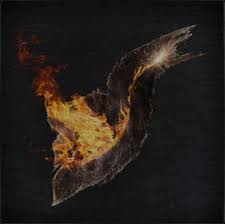

|
Item Name |
Description |
 |
Bolt Paper |
Coarse paper that applies bolt to weapons when rubbed.
Invented by Archibald, the infamous eccentric of the Healing
Church workshop. Artificially recreates the blue sparks that
are said to surround darkbeasts.
Unlike the other strange weapons created by Archibald, this
one was favored by many hunters, in particular those who
had even once laid eyes on a darkbeast. |
 |
Bone Marrow Ash |
Additional medium that strengthens Quicksilver Bullets.
According to the workshop, this is a special bone marrow
ash collected from Hemwick Charnel Lane.
Invaluable to hunters with weak bloodtinge who require the use of stronger firearms. |
|  |
Fire Paper |
Coarse paper that applies fire to weapons when rubbed.
A hunter tool found in the Healing Church workshop.
Since the tragedy that struck Old Yharnam, fire has become
a staple in beast hunts, and is thought to cleanse impurity.
Certain types of beasts have an abnormal fear of flame. |